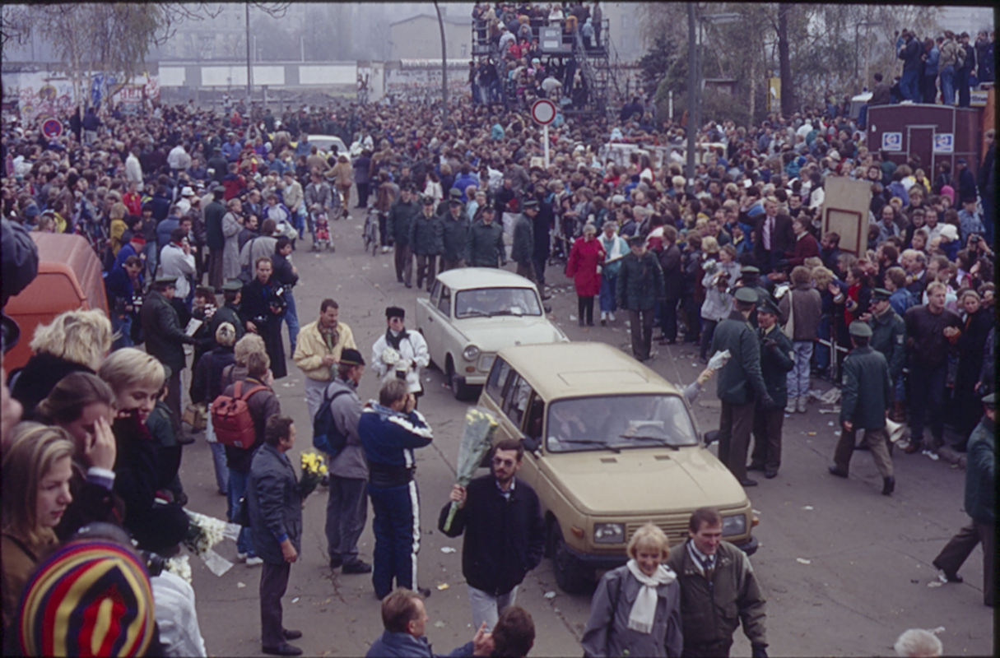

Inspired by the latest developments, protests start to take place in the GDR on Mondays beginning in September. In contrast to 1953, the protests are not put down by force and begin to grow in the number of participants.
In the accumulation of political oppression, public disappointment, for instance after the corrupted election in spring of 1989 and the lack of reformation in the GDR, the stage is set for an eruption of the will of the people.
Although the SED forced Honecker to resign and installed Egon Kranz who promised reforms instead, the public unrest remained. When it was announced that travelling into the FRG was allowed immediately without a reason on November 9th, several thousand citizens rushed to the border where they faced
surprise soldiers guarding it. Under the pressure of the crowds and without a clear instruction how to cope, they opened the borderline to the FRG. The Iron Curtain in “Germany” fell marking the most prominenent success of the revolution.
Here you can navigate through a map showing the old course of the Berlin Wall.
Both the SED-regime and Gorbatschow decided to not use violence to stop the people from leaving and both soon would be swept away in this stormwind of change.
Opening of the Berlin Wall at the Potsdam Square; source: Stiftung Berliner Mauer, Foto: Lothar Kruse